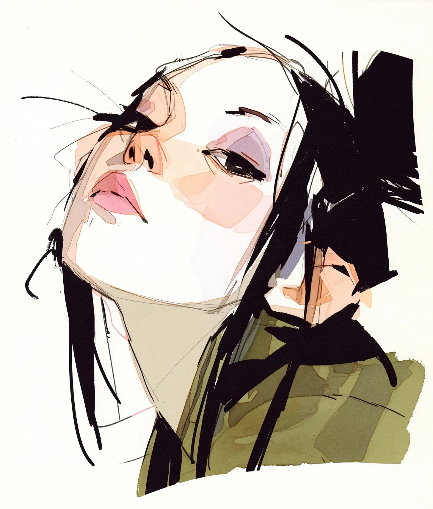

도시의 소음이 하얀 소리로 희미해졌고 그녀는 하늘을 향해 얼굴을 들었다. 경적을 울리는 택시들과 수다 떠는 관광객들의 일상적인 교향곡이 마치 멀리서 부서지는 파도처럼 멀고 하찮은 것으로 녹아들었다.
[The city noise faded to white as she lifted her face to the sky. The usual symphony of honking taxis and chattering tourists dissolved into something distant and unimportant, like waves breaking far offshore.]
그녀의 군용 재킷 - 눈에 띄지 않고, 안전하게 지내며, 평범하게 보이기 위해 산 그 재킷 - 은 갑자기 더 이상 필요 없는 갑옷처럼 느껴졌다.
[Her military jacket - the one she’d bought to blend in, to stay safe, to remain unremarkable - suddenly felt like armor she no longer needed.]
문자 메시지 하나로 시작됐다: “당신의 시집을 출판하고 싶습니다.” 이민자 부모님의 기대라는 무게를 날개로 변화시킨 여섯 마디 말.
[It had started with a text message: “We want to publish your collection.” Six words that transformed the weight of her immigrant parents’ expectations into wings.]
10년 동안 비밀리에 글을 쓰고, 자정부터 새벽까지 자신의 마음을 시로 번역하고, 상사가 자신의 칸막이 사무실을 지날 때마다 스프레드시트 밑에 원고를 숨겨왔던 모든 것들이 이 순수하고 억제할 수 없는 환희의 순간으로 결정화되었다.
[Ten years of writing in secret, of translating her heart into poetry between midnight and dawn, of hiding manuscripts under spreadsheets whenever her supervisor walked past her cubicle - all of it crystallized into this moment of pure, unrestrained elation.]
바람이 그녀의 머리카락을 휘날렸고, 처음으로 그녀는 그것을 다시 가지런히 정돈하려 서두르지 않았다. 그냥 춤추게 두자. 엉키게 두자. 평소에는 단정했던 재무 분석가가 화요일 오후에 흐트러지는 모습을 낯선 이들이 쳐다보게 두자.
[The wind caught her hair, and for once, she didn’t rush to smooth it back into place. Let it dance. Let it tangle. Let the strangers stare at the usually composed financial analyst coming undone on a Tuesday afternoon.]
그들의 시선이 스포트라이트처럼 느껴졌지만, 생애 처음으로 그녀는 그 관심에서 움츠러들지 않았다. 그녀는 점잖은 구두를 신은 초신성이었고, 그들의 판단을 압도할 만큼 밝게 빛나고 있었다.
[Their stares felt like spotlight beams, and for the first time in her life, she didn’t shrink from their attention. She was a supernova in sensible shoes, burning bright enough to outshine their judgments.]
주머니 속 휴대폰이 다시 진동했다 - 아마도 저녁 식사 계획이나 동생의 다가오는 결혼식 준비에 대해 물어보는 어머니일 것이다. 하지만 지금 이 순간, 유일하게 중요한 것은 그녀의 마음과 열린 하늘 사이의 조화뿐이었다.
[Her phone buzzed again in her pocket - probably her mother, asking about dinner plans or her younger sister’s upcoming wedding arrangements. But right now, the only arrangement that mattered was between her heart and the open sky.]
끈질긴 가을 바람은 변화의 속삭임을, 가능성을, 누군가 직업을 물었을 때 마침내 “시인"이라고 대답할 수 있는 미래의 속삭임을 실어 날랐다.
[The persistent autumn breeze carried whispers of change, of possibility, of a future where she could finally answer "poet” when someone asked what she did for a living.]
나중에는 현실적인 것들을 걱정하게 될 것이다. 집세와 퇴직연금, 그리고 금융업을 그만둔다는 소식에 대한 부모님의 반응 같은 것들을. 하지만 지금 이 순간, 과거의 자신과 미래의 자신 사이에 멈춰 선 이 순간에는 그런 것들은 존재하지 않았다. 그녀는 무게가 없었고, 한계가 없었으며, 자유로웠다.
[Later, she would worry about logistics. About her lease, her 401(k), her parents’ reaction to her quitting finance. But in this moment, suspended between who she was and who she was becoming, none of that existed. She was weightless, boundless, free.]
가슴에서 솟아오르는 웃음은 혁명의 맛이 났고, 허락의 맛이 났으며, 평생 동안 기다려온 이야기의 첫 페이지 같은 맛이 났다.
[The laughter bubbling up from her chest tasted like revolution, like permission, like the first page of a story she’d been waiting her whole life to tell.]